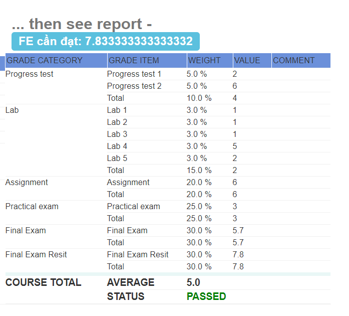

Tool hỗ trợ tính xem bạn cần bao nhiêu điểm FE để qua môn
Link tải: Click
Hướng dẫn cài đặt:
1. Tải về giải nén ra được thư mục: "Caculate_FE_Extension"
2. Cách cài:
-
Đối với Cốc Cốc, truy cập: coccoc://extensions/
-
Đối với Chrome, truy cập: chrome://extensions/
Sau khi truy cập, bật "Chế độ dành cho nhà phát triển" (Góc trên bên phải)
Sau đó click "Tải tiện ích đã giải nén", tìm đến folder chứa thư mục "Caculate_FE_Extension" và chọn
"Select Folder"
3. Vào FAP -> Mark Report (Báo cáo điểm), sẽ thấy hiển thị điểm cần đạt
